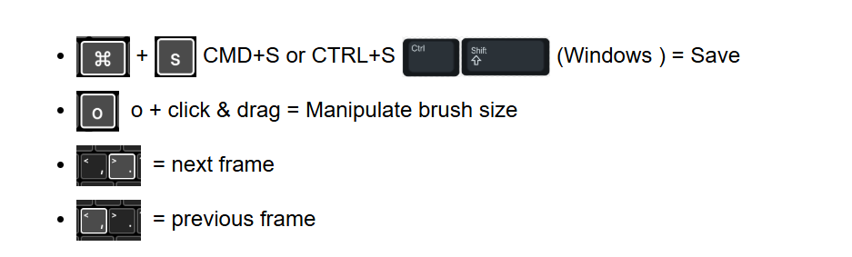
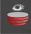

About this Lesson
celebration
Time to jump right into animating in Toon Boom Harmony. In this lesson you will learn how to start, create and export an animated project in Harmony. Whether this is your first time opening up Toon Boom Harmony or you are a seasoned Pro, we will show you a quick warm-up exercise to get you animating in Harmony right away. This animation will be completed at 24 Frames Per Second and will be animated on ones. We will be making an animated scene where two dots are chasing or playing with each other as they cross the camera in Harmony.
schedule
Duration: 4 hours
Key Topics
- Animating on Ones - An animation technique of drawing on every single frame of an animated sequence. Animating on the ones creates a smooth animated sequence, but is extremely time consuming.
- Animating on Twos - An animation technique of drawing on every second frame of an animated sequence. The following empty frame is filled with the previous drawing frame. Most classical animations and animated television shows animate on the twos. Animating on the twos provides a fluid animation and is less time consuming than animating on Ones.
- Animating on Threes - An animation technique of drawing on every third frame in an animated sequence. Most Anime uses this technique, which makes it less time consuming to animate complex characters on a tighter budget.
- Exporting - Compiles an animated project into a playable video format which universal digital players can play. Harmony can export animated scenes into video files, GIFs, images and more.
- Frames Per Second (FPS) - An animated sequence must have at least 2 frames, but to create an optical illusion it is recommended that 24 frames are used to create one second of animation. The default frame rate in Harmony is 24 Frames Per Second.
- Frame Rate - When you create an animation, the images you animate must move fluidly to produce the correct effect. If they don't, you will have a jumpy animation, which won't look good. To get a fluid movement between the drawings, you need several images per second. You need a minimum of 12 images per second, any slower than that and the animation becomes jumpy. An image can also be called a frame; therefore the frame rate is the number of frames you play per second in your animation.
- Frame Size - The size of your project is the width and height of your camera frame in pixels. You may not be familiar with the term 'pixel', but you have probably seen it when you magnify a digital photograph. A pixel is the smallest element of an image displayed on a monitor or TV screen. Pixel, which is short for picture element, is a single point in a graphic image. It is a small sample of an image, a dot, a square or a very small section made out of smooth filtering. If you zoom in close enough on a digital image, you will see the pixels; they look like small squares of different colours and intensity. Pixels are composed of three colours (RGB—Red, Green, Blue).
- Straight Ahead Animation - This is one of the Principles of Animation. It is completed by creating drawings on numerous frames in sequence along a timeline to create an optical illusion.
layersHarmony Topics
- Xstage file: Native computer extension for Toon Boom Harmony
- User Interface: Knowing how to manage the Toon Boom Harmony Advanced interface helps you to work efficiently and organize your workspace conveniently. There are a series of views and toolbars you can use as you perform different operations. Usually, each person has a specific way of working in the interface and prefer particular views and toolbars. In this chapter, you will learn about the main elements of the interface and how to manage them.
- Colour View: The Colour view is where you create colours and palettes and import existing palettes into your project. The Colour view is also necessary for drawing, painting and creating colour styling.
- Timeline View: To set your animation timing, you will mostly work with the Timeline and Xsheet views. It's extremely useful to become familiar with the Timeline view, how it works, and its interface. The Timeline view is the main view used when adjusting the timing of drawings, adding keyframes and ordering layers. It displays layers, effects, sounds, keyframe values, scene length, layer names, drawings, keyframes, timing, and frames.
- Tools Toolbar: The Tools toolbar contains the main tools you need to work in Harmony. In the default workspace, this toolbar is located on the left edge of the application window.
- Camera View: The Camera view is the centre of operations in Harmony. In this view, you can draw, paint, animate, set up your scene, manipulate objects, open symbols and preview your animation. The Camera view also has a top and bottom toolbar that you can use to navigate in the view, change the display mode or go up your symbol hierarchy.
- Tool Properties: The Tool Properties view contains the most common options and operations related to the currently selected tool. When you select a tool from the Tools toolbar, the Tool Properties view updates. For example, if you choose the Select tool, the Tool Properties view will display the options and operations related to it, such as Snap to Contour, Apply to All Drawings, Flip Horizontal, and Flatten.
- Onion Skin: Displays the previous and next frames of an animation. Useful when animating cut-out and paperless characters.
- Exporting: Now that you've finished your animation, it's time to render your movie. Depending on whether you plan to further edit your movie using a third party software, composite the movie in a larger body of work or put it up directly on the web, Harmony supports several formats for all your rendering needs.
Shortcuts introduced in this Lesson:

keyboard
assignmentTask: Hands-On Activity - Fun with Dots
- Begin by watching and taking notes on Your First Animation video (above) and the topics presented in this lesson. Be sure to continue to take notes in your sketchbook/notebook on how to use Harmony and any animation terminology as it will help you prepare for your certification exam at the end of this course.
- Download and review the Shortcuts PDF in the Lesson Files location, on the right of your screen.
- Animate and complete your first animation. Be sure to save and export your Harmony file as: YourName_FunWithDots in your Documents folder. Please submit your animated video using the Submit File section at the bottom of this page.
Step 1:
- Launch Toon Boom Harmony.
- In the Welcome Window, create a new scene called: Dots
- Browse and set the location to your Documents Folder.
- Keep the Camera Size at the default HDTV_1080p24 1080p (1920 by 1080 pixels and the frame rate is 24 frames per second)
- Click Create Scene
- Select the Brush Tool
Hint: Time for a quick overview of the Harmony User Interface (UI), on the left hand side you will find the Tools and the main tool we will use in this lesson will be the Brush tool. In the middle of the UI you will find the Camera View next to the Drawing View. Along the bottom you will find the Timeline, this is where you will add your frames and create layers as you will need to create two different animated dots. On the right of the Camera View, just above the Timeline, you will find the Colour view. Directly above the Colour view you will find the Tool Properties view.
Step 2:
- Go to the Timeline and rename the existing Layer to "Dot 1"
- Make sure the Brush Tool is still selected. Select the colour of black in the Colour view. Place the cursor in the Camera view.
- Hold down the O key to increase and decrease the size of the brush by dragging your cursor from left to right in the Camera view.
- Draw a dot along the left side of the camera box. Please note that there will now be a little rectangle next to your Dot 1 layer, which means there is artwork on this very first frame.
- Use the shortcuts "," (comma) key and "." (period) key to toggle back and forth between previous and next frames in your timeline.
- Enable Onion Skin

found to the left of the name of the Dot 1 layer. This will assist you to see the position of your artwork from frame to frame. Onion Skin will allow you to see the previous frame on your timeline in red. - Now proceed to animate the dot from one side of the Camera View to the other side of the Camera View. Give the dot character and apply a dynamic fun path (not a straight line). Your Dot's path should take 30 frames to complete.
- Using your keyboard "," and "." keyboard shortcuts to move from frame to frame to paint the next position of your dot.
- Play around with the spacing between your instances of the dot from frame to frame. Use the "o" key shortcut to increase/decrease the size of your dot. Try elongating some dots to create a sense of movement.
- Once your dot reaches frame 30, click Stop
 in the Timeline Panel. This will end your scene at frame 30. Now test out your animation by selecting your playhead and scrub it back and forth throughout the animated scene.
in the Timeline Panel. This will end your scene at frame 30. Now test out your animation by selecting your playhead and scrub it back and forth throughout the animated scene. - Adjust the positioning and size of the dots on any of your frames.
- Enable Loop on the Timeline Panel and click Play to watch your animated scene.

Step 3:
- Go to File/Save or select CMD+S or CTRL+S to save your work
- Now it is time to add a new Dot friend to your animated scene. Add a new Drawing Layer and name it "Dot 2"
- Go to your Colour view (under Tool Properties) and select a new colour for your Brush tool, please do not use Red or Green as those are colours used by the Onion Skin tool.
- Repeat your approach of Dot 1, but have Dot 2 chase and/or play along with Dot 1 as they cross the Camera View.
- Test out your animation by scrubbing the Playhead (red arrow with a vertical line under it) or by pressing Play in the Timeline Panel.
- Time to slow down the animation, you will now double your duration to 60 frames. We are now going to apply animating on the Twos to your animation. This may also make your animation a little more fluid.
- In your Timeline, hold down Shift on your keyboard and select frame 1 on "Dot 1" Layer and select frame 30 of "Dot 2" layer. All frames on both layers should be highlighted.
- Right click on frame 30 and select Exposure/Set Exposure to 2. Now each drawing will be extended to 2 frames.
- Select Frame 60 on your Timeline and select Stop in the TimeLine Panel. Play your animation.
Hint: By default, Harmony exports animation with a transparent background, which will look black in most video players. A Colour Card allows the animator to select a background colour of their choice. A Colour Card just needs to be added to your timeline and does not need to be extended for the same number of frames as your animation.
Step 4:
- In the Timeline, add a Colour Card by selecting the + icon. Select a colour for your Colour Card by selecting the orange icon next to the name Colour Card. Select a colour using the colour mixer.
- Review your animated scene one more time.
- Time to Export! Go to File/Export/Animated Gif. Select your Document folder as the destination location.
- Test out your exported animation in a browser.
- Submit your work